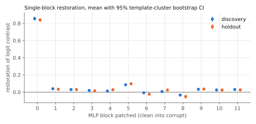
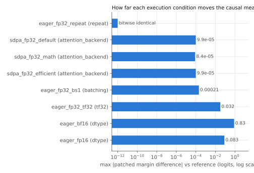
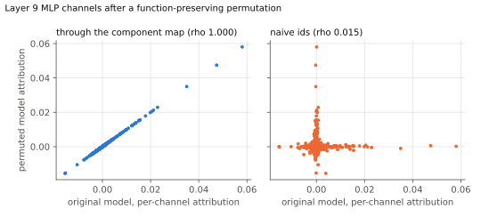
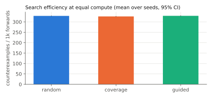

gpt2_ioi_late_mlp_decision_v1Status: falsified_in_scope
In GPT-2 small on IOI with an S2-flip corruption, the late MLP blocks 9, 10 and 11 jointly carry the indirect-object decision: restoring their clean outputs restores at least half of the logit contrast.
Mechanism: Late MLPs write the answer-name direction into the residual stream at the final position.
Unit: MLP block outputs 9, 10, 11 (all positions, patched jointly)
Model: openai-community/gpt2 @ 607a30d783dfa663caf39e06633721c8d4cfcd7e
Scope: 16 registered IOI templates (8 discovery, 8 holdout), 40 single-token first names split 30/10, 12 places, 10 objects, both name orders (float32, backends eager, sdpa)
Prediction per_case_restoration requires patching MLP blocks [9, 10, 11] to restore at least 0.25 of the contrast on every valid input. The base input, the first point of the search space with nothing varied, is already valid and already fails it, so no shrinking is needed:
clean: When Mary and John went to the store, John gave a drink tocorrupt: When Mary and John went to the store, Mary gave a drink toclean margin +2.006 corrupt margin -1.789 patched margin -1.230 restoration 0.147
Search found 4432 distinct counterexamples, 4432 of which reproduced on a fresh evaluation (counterexamples.jsonl).
| id | kind | split | outcome | evidence |
|---|---|---|---|---|
| mean_restoration | restoration_at_least | holdout | fail | mean restoration CI [0.076, 0.092] < 0.5 |
| positive_effect | effect_positive | holdout | pass | mean effect CI low 0.4213 > 0 |
| per_case_restoration | restoration_at_least | holdout | fail | 128/129 cases below 0.25; rate CI low 0.957 > 0.1 |
| gate | ok | detail |
|---|---|---|
| model_revision_pinned | True | revision '607a30d783dfa663caf39e06633721c8d4cfcd7e', loaded commit '607a30d783dfa663caf39e06633721c8d4cfcd7e' |
| reference_dispatch_verified | True | ok |
| task_validity | True | valid cases per split {'discovery': 160, 'holdout': 129}, need 30 |
| identity_patch_null | True | max |identity patch - corrupt| = 0 |
| split | generated | valid | rejections (a case can have several) |
|---|---|---|---|
| discovery | 160 | 160 | none |
| holdout | 160 | 129 | clean_does_not_prefer_answer: 13, contrast_below_threshold: 12, corrupt_does_not_prefer_distractor: 18 |

| split | layer | mean restoration | 95% CI | mean effect (logits) | n | templates |
|---|---|---|---|---|---|---|
| discovery | 0 | 0.855 | [0.835, 0.878] | 5.517 | 160 | 8 |
| discovery | 1 | 0.039 | [0.037, 0.043] | 0.247 | 160 | 8 |
| discovery | 2 | 0.030 | [0.024, 0.036] | 0.178 | 160 | 8 |
| discovery | 3 | 0.020 | [0.015, 0.026] | 0.135 | 160 | 8 |
| discovery | 4 | 0.013 | [0.006, 0.021] | 0.071 | 160 | 8 |
| discovery | 5 | 0.086 | [0.077, 0.094] | 0.560 | 160 | 8 |
| discovery | 6 | -0.008 | [-0.015, -0.001] | -0.062 | 160 | 8 |
| discovery | 7 | 0.006 | [-0.006, 0.018] | 0.067 | 160 | 8 |
| discovery | 8 | -0.034 | [-0.047, -0.021] | -0.185 | 160 | 8 |
| discovery | 9 | 0.032 | [0.024, 0.041] | 0.220 | 160 | 8 |
| discovery | 10 | 0.025 | [0.018, 0.033] | 0.192 | 160 | 8 |
| discovery | 11 | 0.031 | [0.025, 0.038] | 0.210 | 160 | 8 |
| holdout | 0 | 0.839 | [0.820, 0.859] | 5.134 | 129 | 8 |
| holdout | 1 | 0.033 | [0.023, 0.044] | 0.193 | 129 | 8 |
| holdout | 2 | 0.030 | [0.020, 0.042] | 0.168 | 129 | 8 |
| holdout | 3 | 0.015 | [0.003, 0.027] | 0.099 | 129 | 8 |
| holdout | 4 | 0.028 | [0.022, 0.035] | 0.167 | 129 | 8 |
| holdout | 5 | 0.097 | [0.079, 0.112] | 0.590 | 129 | 8 |
| holdout | 6 | -0.024 | [-0.034, -0.012] | -0.139 | 129 | 8 |
| holdout | 7 | 0.024 | [0.012, 0.034] | 0.169 | 129 | 8 |
| holdout | 8 | -0.052 | [-0.075, -0.031] | -0.285 | 129 | 8 |
| holdout | 9 | 0.036 | [0.031, 0.039] | 0.240 | 129 | 8 |
| holdout | 10 | 0.025 | [0.006, 0.038] | 0.176 | 129 | 8 |
| holdout | 11 | 0.026 | [0.017, 0.037] | 0.167 | 129 | 8 |
Every condition changes one factor relative to the reference. Measurements use the reference's set of valid cases so the denominator never moves.

| condition | factor | observed attention | classification | max d patched margin | max d clean logit | discovery top-k | prediction flips |
|---|---|---|---|---|---|---|---|
| eager_fp32_repeat | repeat | eager_matmul_softmax | bitwise_identical | 0.000 | 0.000 | [0, 1, 5] | none |
| sdpa_fp32_default | attention_backend | efficient | within_tolerance | 9.92e-05 | 0.000267 | [0, 1, 5] | none |
| sdpa_fp32_math | attention_backend | math | within_tolerance | 8.39e-05 | 0.000206 | [0, 1, 5] | none |
| sdpa_fp32_efficient | attention_backend | efficient | within_tolerance | 9.92e-05 | 0.000267 | [0, 1, 5] | none |
| sdpa_fp32_flash | attention_backend | none | not run | probe raised: No available kernel. Aborting execution. | |||
| eager_fp32_bs1 | batching | eager_matmul_softmax | within_tolerance | 0.000206 | 0.000381 | [0, 1, 5] | none |
| eager_fp32_tf32 | tf32 | eager_matmul_softmax | exceeds_tolerance_no_decision_change | 0.032 | 0.167 | [0, 1, 5] | none |
| eager_bf16 | dtype | eager_matmul_softmax | decision_changing | 0.828 | 2.238 | [0, 5, 9] | none |
| eager_fp16 | dtype | eager_matmul_softmax | exceeds_tolerance_no_decision_change | 0.083 | 0.369 | [0, 1, 5] | none |
Every MLP's hidden channels permuted (seed 1). Output parity over all positions, full vocabulary, clean and corrupt: max |d logit| 0.000267, argmax agreement 1.000, gate passed (tolerance atol + rtol * |logit| with rtol 0.0) at atol 0.001.
Block-level effects on the permuted model: within_tolerance, max |d patched margin| 8.39e-05, prediction flips none.

| layer | rho mapped | rho naive ids | top-k patch: original | permuted, mapped ids | permuted, naive ids | naive ids flagged |
|---|---|---|---|---|---|---|
| 9 | 1.0000 | 0.0146 | 0.0589 | 0.0589 | -3.766e-05 | True |
| 10 | 1.0000 | 0.0062 | 0.0302 | 0.0302 | -0.0002182 | True |
A neuron-level claim survives the permutation only through the component map. Read with naive ids, the same claim points at unrelated channels.

| strategy | seeds | counterexamples / 1k forwards | 95% CI | valid proposal rate | lowest restoration reached (mean over seeds) |
|---|---|---|---|---|---|
| random | 5 | 328.893 | [327.417, 330.299] | 0.992 | -0.134 |
| coverage | 5 | 326.381 | [325.128, 327.861] | 0.991 | -0.097 |
| guided | 5 | 329.263 | [327.486, 331.038] | 0.987 | -0.151 |
The claim's per-case threshold is 0.25. The last column shows how close each strategy pushed the claim towards failing within its budget of 900 forwards per seed, which matters most when no counterexample was found.
Counterexamples are drawn from the discovery axis space only. The holdout templates and names are never searched.
| challenge | invariance | valid | contradicts | summary |
|---|---|---|---|---|
| numerical:eager_fp32_repeat | repeat | True | False | bitwise_identical; prediction flips []; top-k [0, 1, 5] -> [0, 1, 5] |
| numerical:sdpa_fp32_default | attention_backend | True | False | within_tolerance; prediction flips []; top-k [0, 1, 5] -> [0, 1, 5] |
| numerical:sdpa_fp32_math | attention_backend | True | False | within_tolerance; prediction flips []; top-k [0, 1, 5] -> [0, 1, 5] |
| numerical:sdpa_fp32_efficient | attention_backend | True | False | within_tolerance; prediction flips []; top-k [0, 1, 5] -> [0, 1, 5] |
| numerical:eager_fp32_bs1 | batching | True | False | within_tolerance; prediction flips []; top-k [0, 1, 5] -> [0, 1, 5] |
| numerical:eager_fp32_tf32 | tf32 | True | False | exceeds_tolerance_no_decision_change; prediction flips []; top-k [0, 1, 5] -> [0, 1, 5] |
| numerical:eager_bf16 | out_of_scope | True | True | decision_changing; prediction flips []; top-k [0, 1, 5] -> [0, 5, 9] |
| numerical:eager_fp16 | out_of_scope | True | False | exceeds_tolerance_no_decision_change; prediction flips []; top-k [0, 1, 5] -> [0, 1, 5] |
| numerical:sdpa_fp32_flash | attention_backend | False | False | not run: probe raised: No available kernel. Aborting execution. |
| symmetry | mlp_channel_permutation | True | False | parity max |dlogit| 0.000267; block-level within_tolerance; mapped neuron attributions agree |
| counterexamples | counterfactual_inputs | True | False | 4432 unique counterexamples (4432 reproduced); no minimized counterexample generalised to a failing sub-scope |
kerneltrace replay runs/20261101T150506Z_gpt2_ioi_late_mlp_0e338db5
torch 2.11.0+cu128 (CUDA 12.8), transformers 4.57.6, NVIDIA GeForce RTX 5060 Laptop GPU, driver 610.74, git 52ee56d734 (clean tree).